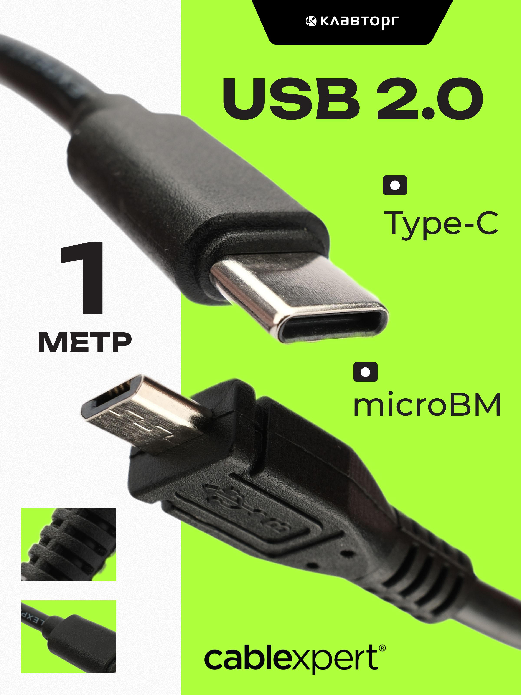

Провода
Кабель USB Type-C – microB, 1 м, Cablexpert
Кабель USB 2.0 с разъёмами USB Type-C и micro-USB (micro-B), длиной 1 м. Подходит для зарядки и передачи данных между устройствами с этими интерфейсами.

Документация
Каталог Cablexpert: USB 2.0 кабели, включая Type-C to micro-USBСтраница продукта Cablexpert: USB Type-C to micro-USB charging & data cable, 1.5 m
Характеристики
Тип кабеля
USB 2.0
Разъём 1
USB Type-C (male)
Разъём 2
micro-USB / micro-B (male)
Длина
1 м
Назначение
зарядка и передача данных
Поддержка видео
не поддерживается
Бренд
Cablexpert
Подробнее
Это соединительный кабель Cablexpert для устройств с портом USB Type-C и micro-USB (micro-B). Обычно он нужен для подключения смартфонов, планшетов, аксессуаров и другой портативной техники к зарядке или компьютеру. По данным производителя, кабель относится к USB 2.0 и поддерживает передачу данных, а также зарядку. Для этой позиции на сайте Cablexpert найдено соответствие по семейству USB Type-C to micro-USB cables; в карточке и каталоге производителя есть линейка с длиной 1 м. Разъём micro-USB обозначается как micro-B, поэтому это одна и та же физическая категория подключения.
hw-2026-063